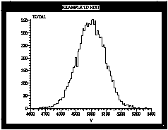
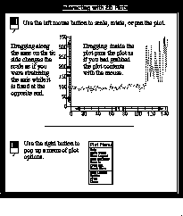

Figure 14. One-Dimensional Histogram
When a one-dimensional histogram is selected from the Main Window or from the NTuple Window, Histo-Scope will display a one-dimensional histogram plot. A one dimensional histogram is a plot of one variable over a pre-specified range which has been divided into a number of bins.

Figure 15. Iteracting with 1-D Histograms
Initially, the entire range (excluding overflows) of the histogram is displayed. You can change the size of the plot by changing the size of its window (by dragging on the window frame). You can change the scale of the plot by using the mouse to drag a part of an axis (just outside of the plot) toward one direction or another. Use a point near the upper half of the axis to change the maximum axis value. Use an axis point near the lower half of the axis to change the minimum axis value. This will zoom in or out, depending on the direction you drag that axis point.
Once you have scaled a plot, it is possible to grab a point inside the plot and pan the plot, moving it around inside the axes.
Histo-Scope allows one-dimensional histogram plots to be overlaid by other one-dimensional plots such as 1-D histograms, adaptive 1-D histograms,XY Plots, and Time Series Plots. Up to ten plots can be overlaid in one window. To insert a plot on top of a one-dimensional plot, use the middle mouse button to drag a plot onto the one-dimensional histogram window (To drag the plot, press the middle mouse button while the pointer is over the plot area of the desired plot, and, while holding the mouse button down, move the mouse pointer over to the receiving histogram plot, and then release the middle mouse button. When you press the middle mouse button, the pointer changes to indicate that your are initiating a drag.) If the drag succeeds, you will see both plots overlaid in the receiving window (the source plot remains unchanged). If the drag does not succeed, you will see the drag icon move back to the source plot when you release the middle mouse button
You can also use the right mouse button to pop-up a menu which allows the following functions:
(Accelerator Key):Error data stored for the histogram can be displayed as error bars by selecting Error Data from the plot settings menu. If selected from the Ntuple Window, up to three slider variables can be selected for adjusting the plot with animation sliders. See the section Adjusting Plot Settings in this guide for detailed explanations of plot settings.Help
Show Statistics (Ctrl T)
Show Sliders[6] (Ctrl L)
Show Rebin Slider (Ctrl B)
Set Histogram Style... (Ctrl M)
Show legend (Ctrl G)
Axis Settings... (Ctrl A)
Zoom In (Ctrl Z)
Zoom Out (Shift Ctrl Z)
Reset View (Ctrl R)
Error Data[7]
Gaussian Errors
Label at Bin Edges
Automatic Update
Update (Ctrl U)
Grow Only (Ctrl O)
Print... (Ctrl P)
Generate PostScript... (Ctrl F)
Change Window Title (Ctrl E)
Close (Ctrl W)